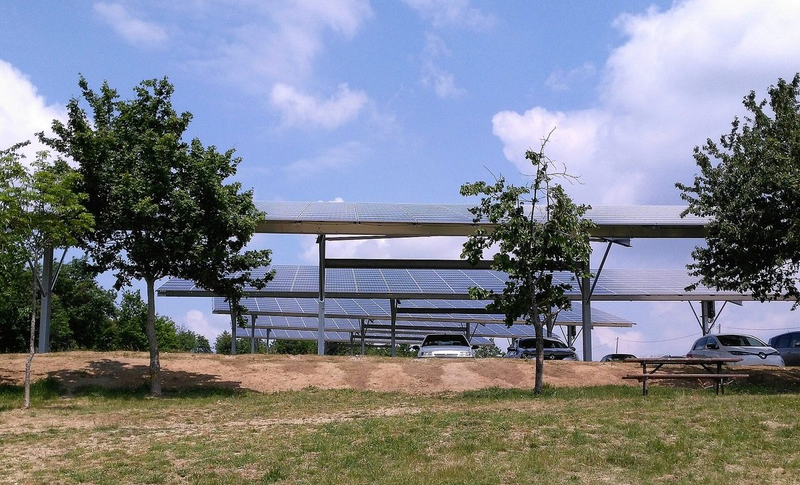

프랑스 보르도 바칼랑 화물차 주차장 위에 3,648kWc 태양광 그늘막…광역도시·시 공공 주차장 태양광화 사업 두 번째 단계

그늘막 2만2,000㎡로 연 4,377MWh 생산해 전량 전력망 공급, 대형 화물차 통행에 맞춰 구조물 설계…다음은 2027년 여름 빌르나브도르농 환승주차장 300kWc, 발전소 소유 주체와 주민 참여는 밝혀지지 않아
프랑스 보르도 메트로폴(광역도시)과 보르도시가 함께 벌이는 공공 주차장 태양광화 사업이 바칼랑 지구의 '트루아 카르디노(3 Cardinaux)' 도로 화물 센터 주차장 위에 태양광 그늘막 2만2,000㎡를 세우며 다음 단계로 넘어갔다. 이 주차장은 대형 화물차가 드나들고 서는 곳이어서 설계에 큰 기술적 제약이 따랐고, 설치를 맡은 그린옐로(GreenYellow)는 화물차의 통행과 주차를 막지 않으면서 발전 면적은 최대한 살리도록 구조물 크기를 맞췄다. 설비 용량은 3,648kWc로 해마다 4,377MWh의 전기를 만들어 모두 전력망으로 보내며, 사업 기간 동안 이산화탄소 2,439톤을 줄일 것으로 계산됐다. 이번 설비는 2025년 12월 보르도-락의 콜레트 베송 스포츠 평원 발전소 가동에 이은 것으로, 다음에는 빌르나브도르농(Villenave-d'Ornon)의 환승주차장 'P+R 피레네'에 300kWc, 연 약 400MWh 규모 발전소를 지어 2027년 여름 가동할 예정이다. 사업 전체로는 태양광 그늘막 2만3,800㎡와 패널 8,000장 이상이 주차면 약 400면을 덮는다. 발전소를 누가 소유하고 전기 판매 수입이 어디로 가는지는 알려지지 않았으며, 주민이 출자하거나 전기 혜택을 받는 요소도 드러나지 않았다.
시민에너지 관점
대형 화물차가 드나드는 주차장에까지 높이와 구조를 맞춰 3,648kWc를 올린 것은, 쓰임새가 까다롭다는 이유로 미뤄 둔 공공 주차장도 설계만 맞추면 발전소가 될 수 있다는 뜻이다. 구조물이 크고 비쌀수록 결국 자본력 있는 대기업만 할 수 있다는 우려가 나올 수 있지만, 땅이 공공의 것인 이상 누가 돈을 대고 누가 수익을 가져가느냐는 지자체가 사업 조건으로 정할 수 있는 문제다. 프랑스에는 시민 출자를 모아 지역 재생에너지 사업의 지분을 사들이는 에네르지 파르타제(Énergie Partagée) 같은 시민에너지 운동이 이미 자리 잡고 있어, 공공 주차장 발전소에 주민 지분을 넣는 길도 열려 있다. 국내 공영주차장 태양광도 화물차 차고지·환승주차장처럼 까다로운 곳까지 대상을 넓히되, 사업 공고 단계에서 소유 구조와 수익의 행방을 밝히고 주민 출자 몫을 먼저 정해야 한다.
출처: pv magazine France 2026-10-28 François Puthod 원문 보기
仏ボルドー・バカランのトラック駐車場に3,648kWcの太陽光カーポート…広域都市と市による公共駐車場の太陽光化事業が第2段階へ
カーポート2万2,000㎡で年4,377MWhを発電し全量を送電網へ、大型トラックの通行に合わせて構造物を設計…次は2027年夏にヴィルナーヴ・ドルノンのパーク・アンド・ライド駐車場で300kWc、発電所の所有主体と住民参加は不明
フランスのボルドー・メトロポール（広域都市）とボルドー市が共同で進める公共駐車場の太陽光化事業が、バカラン地区にある道路貨物センター「トロワ・カルディノー（3 Cardinaux）」の駐車場の上に太陽光カーポート2万2,000㎡を設置し、次の段階に進んだ。この駐車場は大型トラックが出入りし停車する場所であるため設計上の技術的制約が大きく、設置を担ったグリーンイエロー（GreenYellow）は、トラックの通行と駐車を妨げずに発電面積をできるだけ確保できるよう構造物の寸法を合わせた。設備容量は3,648kWcで、毎年4,377MWhの電気をつくって全量を送電網に送り、事業期間を通じて二酸化炭素2,439トンを削減すると試算されている。今回の設備は、2025年12月にボルドー・ラックのコレット・ベッソン・スポーツ平原の発電所が稼働したのに続くもので、次はヴィルナーヴ・ドルノン（Villenave-d'Ornon）のパーク・アンド・ライド駐車場「P+Rピレネー」に300kWc、年約400MWh規模の発電所を建設し、2027年夏の稼働を予定している。事業全体では太陽光カーポート2万3,800㎡と8,000枚を超えるパネルが約400台分の駐車スペースを覆う。発電所を誰が所有し、売電収入がどこに入るのかは明らかにされておらず、住民が出資したり電気の恩恵を受けたりする要素も示されていない。
市民エネルギーの視点
大型トラックが出入りする駐車場にまで高さと構造を合わせて3,648kWcを載せたことは、使い方が難しいとして後回しにされてきた公共駐車場も、設計さえ合わせれば発電所になりうることを意味する。構造物が大きく高価になるほど、結局は資本力のある大企業にしかできないという懸念も出るだろうが、土地が公共のものである以上、誰が資金を出し誰が収益を得るかは自治体が事業条件として決められる問題だ。フランスには市民の出資を集めて地域の再生可能エネルギー事業の持ち分を取得するエネルジー・パルタジェ（Énergie Partagée）のような市民エネルギー運動がすでに根付いており、公共駐車場の発電所に住民の持ち分を組み込む道も開かれている。韓国の公営駐車場の太陽光も、トラックの車庫やパーク・アンド・ライド駐車場のような難しい場所まで対象を広げつつ、事業公告の段階で所有構造と収益の行き先を明らかにし、住民出資の持ち分を先に決めるべきだ。
出典: pv magazine France 2026-10-28 François Puthod 原文を読む
法国波尔多巴卡朗货车停车场建成3,648kWc光伏遮阳棚…大都会区与市政府公共停车场光伏化项目进入第二阶段
2万2,000平方米遮阳棚年发电4,377MWh、全部并网，结构按大型货车通行设计…下一步是2027年夏天维勒纳沃-多尔农换乘停车场300kWc，电站所有者与居民参与情况未公开
法国波尔多大都会区（Bordeaux Métropole）与波尔多市共同推进的公共停车场光伏化项目，在巴卡朗（Bacalan）街区“三红衣主教（3 Cardinaux）”公路货运中心的停车场上方建起2万2,000平方米的光伏遮阳棚，项目由此迈入下一阶段。这座停车场供大型货车进出和停放，设计上的技术限制很大；负责安装的GreenYellow公司调整了结构尺寸，既不妨碍货车通行和停放，又尽量扩大发电面积。设施装机容量为3,648kWc，每年发电4,377MWh，全部输入电网，测算在项目期间可减少二氧化碳排放2,439吨。此次设施接续2025年12月投运的波尔多湖区（Bordeaux-Lac）科莱特·贝松体育园区电站，下一步将在维勒纳沃-多尔农（Villenave-d'Ornon）的换乘停车场“P+R Pyrénées”建设300kWc、年发电约400MWh的电站，计划2027年夏天投运。整个项目共有2万3,800平方米光伏遮阳棚和8,000多块光伏板，覆盖约400个停车位。电站归谁所有、售电收入流向何处尚未公开，也未见居民出资或享受电力优惠的内容。
市民能源视角
连大型货车进出的停车场也能按高度和结构定制、装上3,648kWc，说明那些因用途复杂而被搁置的公共停车场，只要设计得当同样可以成为电站。有人会担心，结构越大越贵，最后只有资本雄厚的大企业才做得了；但既然土地属于公共所有，由谁出资、由谁获得收益，地方政府完全可以作为项目条件来决定。法国已有Énergie Partagée这样汇集市民出资、入股地方可再生能源项目的市民能源运动，为在公共停车场电站中纳入居民股份打开了通道。韩国的公营停车场光伏也应把货车车库、换乘停车场等复杂场地纳入范围，同时在项目公告阶段公开所有权结构和收益去向，并先行确定居民出资的份额。
来源: pv magazine France 2026-10-28 François Puthod 查看原文
Bordeaux puts 3,648 kWp of solar canopies over Bacalan truck park as metropolitan area and city move to second stage of public car park solar programme
22,000 m² of canopies to generate 4,377 MWh a year, all fed into the grid, with structures designed around heavy trucks; next comes a 300 kWp plant at the P+R Pyrénées park-and-ride in Villenave-d'Ornon in summer 2027; ownership and resident involvement not disclosed
The car park solar programme run jointly by Bordeaux Métropole and the City of Bordeaux has moved to its next stage with 22,000 m² of solar canopies over the car park of the 3 Cardinaux road freight centre in the Bacalan district. Because the site is used by heavy trucks coming and going and parking, the design faced major technical constraints, and installer GreenYellow sized the structures so that trucks can still move and park while making the most of the area available for generation. The plant has a capacity of 3,648 kWp and will produce 4,377 MWh of electricity a year, all of it fed into the grid, and is calculated to avoid 2,439 tonnes of CO2 over the life of the project. It follows the plant at the Colette Besson sports grounds in Bordeaux-Lac, which began operating in December 2025, and the next step is a 300 kWp plant producing about 400 MWh a year at the P+R Pyrénées park-and-ride in Villenave-d'Ornon, due to start in summer 2027. In total the programme covers about 400 parking spaces with 23,800 m² of solar canopies and more than 8,000 panels. Who owns the plants and where the electricity sales revenue goes has not been disclosed, and there is no sign of residents investing or receiving electricity benefits.
Citizen Energy View
Fitting 3,648 kWp over a car park used by heavy trucks, with the height and structure adapted to them, shows that public car parks put off because of awkward uses can also become power plants if the design fits. Some may worry that larger, costlier structures mean only big, well-capitalised companies can take them on, but as long as the land is public, who puts up the money and who takes the returns is something local authorities can set as project conditions. France already has an established citizen energy movement in Énergie Partagée, which pools citizens' savings to take stakes in local renewable projects, so the path to including resident shares in public car park plants is already open. Korean public car park solar should likewise extend to difficult sites such as truck depots and park-and-ride lots, while disclosing ownership and where the revenue goes at the tender stage and setting aside a share for resident investment first.
Source: pv magazine France 2026-10-28 François Puthod Read the original